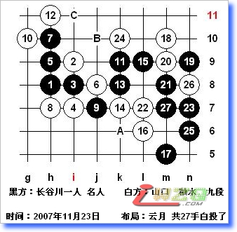

乏味的一局，黑完胜。如16-18，17-16！如14-A，15-24，17-B！如12-13，13-C！
记得早在2003年的“名人战”山口就和长谷川走过类似的4（见附录的点评），ando也在数年前的讲课中提到实战的5。对于本图的4，或许白棋预想黑棋会按照参考图一的下法。
本图黑5常见的二打必胜点，白棋虽然最强防，但21妙手拓展黑胜。如果是雨月局，由于有盘端差异，对此胜法有影响。有趣的是长谷川两次在名人战中避开了这个黑5。
附录：第41期 全日本连珠名人战 第一局
简评：没有中村茂的“名人战”有些令人乏味，中村茂在位时每年的“名人战”都引起极大的关注，因为中村经常会在“名人战”中给连珠届送来意想不到的“礼物”，引领连珠风潮。现在的名人战似乎只是为了决定谁是“名人”而战，不论在创新与进取方面都是“王小儿过年，一年不如一年”。
本局，山口名人布局金星，长谷川交换执黑。山口喜欢开优势布局，大家已经习以为常。今年之所以没有使用拿手的恒星或许是在世界杯上屡受打击已经失去了自信吧？实战的白4奇怪的一手，以至我以为棋谱出错，山口怎么会用这个白4？黑必胜的啊！找了半天才看到长谷川的黑5？没办法，这就是长谷川的风格。
黑5正确的两打点是7i和8i，黑5－7i白棋最强防通寒星必胜，不是太复杂实战即便没有研究也能计算出来。我估计山口是想和长谷川赌黑5－8i的必胜，这个变化和今年世界杯上流行的云月白4弱防互通。黑棋取胜需要一些妙手，如果没有研究实战较难下出正解。
但是，作为一名日本的顶尖棋手对世界杯的流行变化应该引起足够的重视，实战说明长谷川这方面准备的不充分。另外，长谷川当然知道黑5－8i的必胜打点，之所以没有选择除了研究不足外，也说明自信心方面有问题。看来，山口对长谷川很了解。实战的黑5完成了从必胜到相对平衡的转折，或许“公平”的战斗更符合长谷川对棋的理解。
实战白6～17基本正常，黑棋控制外围这种局面比较适合长谷川的风格。山口的防守一直不错，虽然黑棋没有可能马上组织进攻，但是尤其要小心对应。实战白18有问题，可以说是本局的败着！白棋的意图是想在右边定型，但是被黑棋先手占据21的要点后白棋不好。白18似乎可以考虑先在21位，一边破坏黑棋的好形，一边留有余味再回手18较为妥当。
实战白22防守后，黑23棋形绝好！黑胜势。白24防守似乎最强，黑25！黑棋应该胜了。实战长谷川27稍有疑问，黑棋错过速胜机会。黑棋正确的下法是：27－3d，28－2c，29－6h！（不易察觉的要点），30－5i，31－5d！以后容易。不过还好黑棋优势太大，白28已经很难找到有效的防点。此后长谷川胜的很漂亮！